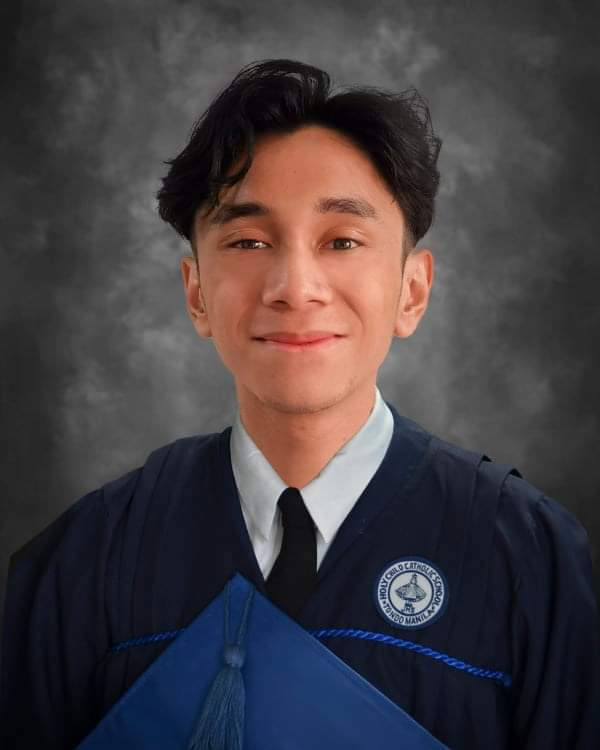
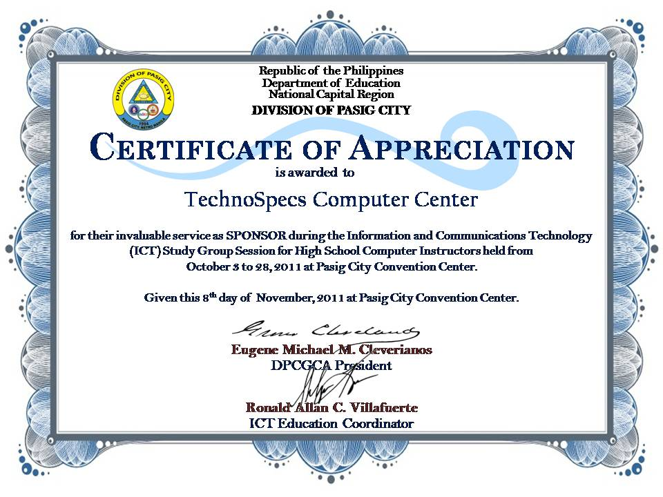

Rustan Angello A. Chavez
Summary
Results-oriented Software Engineer with 5+ years of experience developing innovative web applications. Proficient in Python, JavaScript, and React. Skilled in Agile methodologies and DevOps practices.
Successfully led a team to deliver a new product that increased user engagement by 25%.
Education
Primary and Secondary Education
- Holy Child Catholic School
Tondo, Manila
(2008 - 2018)
- Colegio De San Juan De Letran
Intramuros, Manila
(2018 - 2019)
Tertiary Education
- Pamantasan ng Lungsod ng Maynila
Intramuros, Manila
(2020 - 202)
Work Experiences
Software Engineer (2026-2030)
Tech Solutions Inc.City, StateDates of Employment
- Designed and developed scalable web applications using Python and React.
- Collaborated with cross-functional teams to deliver projects on time and within budget.
- Implemented new features that improved website performance by 30%.
Marketing Manager (2030 - 2034)
Acme CorporationCity, StateDates of Employment
- Developed and executed comprehensive marketing strategies to increase brand awareness and drive sales by 25% in one year.
- Managed a team of marketing professionals, including copywriters, designers, and social media specialists.
- Successfully launched three new product lines, generating over $1 million in revenue within the first quarter.
Skills
Soft Skills
- Communication: Verbal, written, presentation, active listening
- Problem-solving: Critical thinking, analytical skills, decision-making
- Interpersonal: Teamwork, collaboration, leadership, conflict resolution
- Organization: Time management, planning, prioritization, attention to detail
- Adaptability: Flexibility, resilience, ability to learn new things
- Professionalism: Work ethic, initiative, reliability, integrity
Hard Skills
- Technical Skills: Java, C++, Rust, Python
- Business Skills: Project Management, Financing
- Certifications: PMP, CompTIA, Microsoft Office Suite
- Languages: English, Filipino, Japanese
Certifications


Other Information